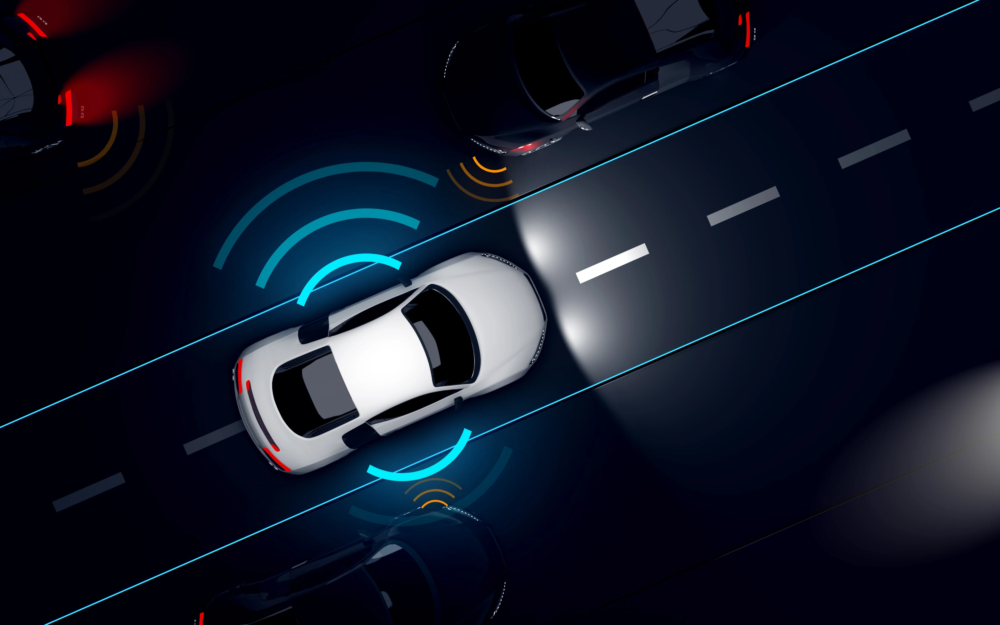
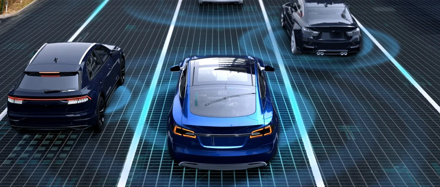

VT-Pilot® 系列
ADAS
面向乘用車及商用車，以視覺感知、定位導航（如適用）與規劃控制域控制器協同，覆蓋從基礎駕駛輔助到高階智能駕駛的多層級功能配置。
VT-Pilot® 系列智能駕駛解決方案可部署於乘用車及商用車，按項目組合 VT-Sensing 視覺感知、VT-Navi 定位導航以及 VT-Vulcan® 規劃控制域控制器，並支持在單一平台上同時實現智能駕駛及智能座艙功能。依託 VT-Fundra 基礎適配架構與 VT-Bridgara 功能賦能架構，方案可適配不同主流 SoC 平台、操作系統及車型，以較少二次開發實現跨平台部署。系列已覆蓋從全景環視、透明底盤、AEB、ACC、LCC 到 APA、RPA 等逐步提升的駕駛輔助與泊車能力。
PRODUCT LINES

面向乘用車及商用車，以視覺感知、定位導航（如適用）與規劃控制域控制器協同，覆蓋從基礎駕駛輔助到高階智能駕駛的多層級功能配置。

公司已取得 ADS 相關項目定點，持續推動高階智能駕駛解決方案的商業化落地。
PRODUCT ROADMAP
下表載列 VT-Pilot® 系列涵蓋功能範圍、自動化水平及系統複雜性逐步提升的四代產品。
| VT-Pilot® 1.0 | VT-Pilot® 2.0 | VT-Pilot® 3.0 | VT-Pilot® 4.0 | |
|---|---|---|---|---|
| 狀態 | 量產 | 量產 | 已於2026年獲得定點；計劃於2027年商業化 | 已於2026年獲得定點；計劃於2027年商業化 |
| 關鍵功能 | 視覺輔助
| 增強駕駛輔助功能
| 擴展駕駛輔助
| 先進駕駛自動化技術
|
VT-Pilot® 系列由 VT-Fundra 基礎適配架構與 VT-Bridgara 功能賦能架構支持，可面向主流 SoC 平台、操作系統及車型進行平台化適配，以較低二次開發成本支持不同自動化等級的量產配置。